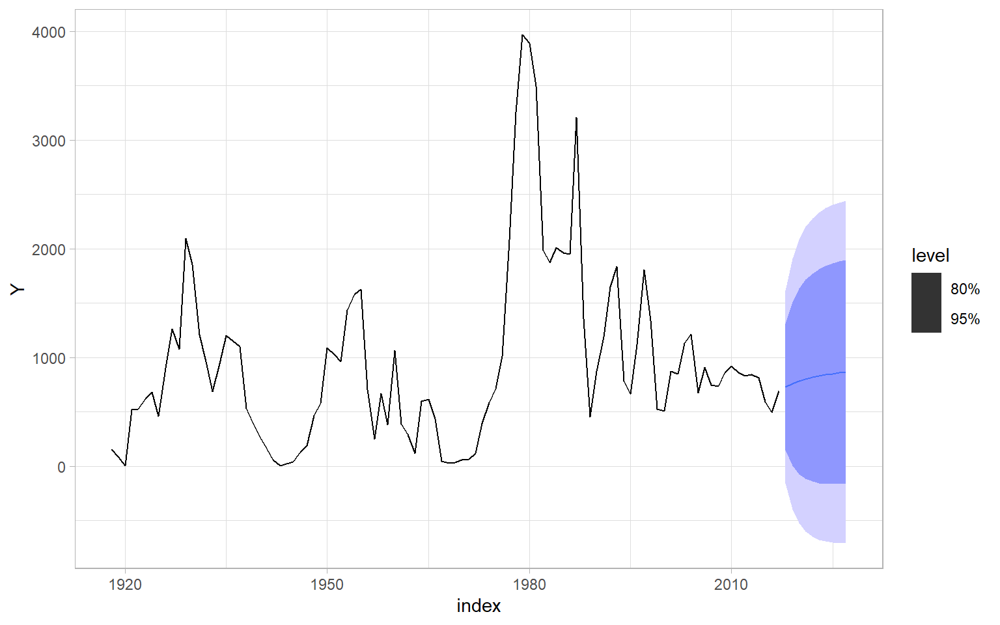

4 Autoregressive Moving Average (ARMA) Models
The goal of this lecture is to introduce a broad class of models for stationary time series – autoregressive moving average (ARMA) models. You should recognize the difference between the AR and MA components and learn how to implement these models in practice.
Objectives
- Define AR(\(p\)), MA(\(q\)), and ARMA(\(p,q\)) models for stationary time series.
- Identify the orders \(p\) and \(q\) using ACF and PACF plots.
- Estimate models using different methods and select a model using an information criterion (AIC or BIC).
- Diagnose the residuals of an ARMA model.
- Obtain forecasts from ARMA models.
Reading materials
- Chapters 2, 3, and 5 in Brockwell and Davis (2002)
4.1 Introduction
After removing or modeling a trend and strong seasonality in a time series, we need to take care of the stationary remainder, which may be autocorrelated or conditionally heteroskedastic. Here we introduce a broad class of ARMA models that deal with autocorrelation in time series.
Recall that a time series is (weakly) stationary if its mean and autocovariance do not depend on time, \(t\); autocovariance depends only on the lag \(h\). We will use these two conditions to show that the time series processes that we will model as AR, MA, or ARMA are stationary. Remember that the presence of autocorrelation does not mean that there is a trend.
We start by checking the two conditions for other typical univariate processes: white noise and random walk.
Code
# Set seed for reproducible random number generation
set.seed(123)
T <- 300L
Lag <- 0:15Most of the examples in this lecture are simulated to show how sample autocorrelations may differ from theoretical ones, even if the simulated time series are sampled from a process of a certain type. All simulated series are of length 300.
See Figure 4.1 with plots for \(X_t \sim \mathrm{WN}(0, \sigma^2)\), where \(\sigma = 2\). More specifically, \[ X_t \sim \text{i.i.d.}\; N(0, \sigma^2);\; \sigma = 2. \tag{4.1}\]
Code
# Theoretical ACF, PACF
RHO <- c(1, rep(0, max(Lag)))
# Sample data
X <- ts(rnorm(T, sd = 2))
# Plots
p1 <- ggplot(data.frame(Lag, ACF = RHO), aes(x = Lag, y = ACF)) +
geom_bar(stat = "identity") +
ggtitle("Theoretical ACF") +
theme_light()
p2 <- ggplot(data.frame(Lag, PACF = RHO), aes(x = Lag, y = PACF)) +
geom_bar(stat = "identity") +
ggtitle("Theoretical PACF") +
theme_light()
p3 <- forecast::autoplot(X) +
ggtitle("Sample time series") +
theme_light()
p4 <- forecast::ggAcf(X) +
ggtitle("Sample ACF") +
theme_light()
p5 <- forecast::ggAcf(X, type = "partial") +
ggtitle("Sample PACF") +
theme_light()
(plot_spacer() + p1 + p2) / (p3 + p4 + p5) +
plot_annotation(tag_levels = 'A')Remember that ACF(0) = PACF(0) = 1 always. Some R plotting functions show results for the zero lag (e.g., acf()), some do not (e.g., pacf() and the function forecast::ggAcf() used here).
Random walk patterns are widely found in nature, for example, in the phenomenon of Brownian motion. Notice the linear decay in ACF of nonstationary time series (Figure 4.2).
\[ S_t = \sum_{i = 1}^t X_i,\; \text{where}\; X_t \sim \mathrm{i.i.d.}(0, \sigma^2);\; \sigma = 2. \tag{4.2}\]
Code
# Sample data
RW0 <- ts(cumsum(X))
# Plots
p3 <- forecast::autoplot(RW0) +
ggtitle("Sample time series") +
theme_light()
p4 <- forecast::ggAcf(RW0) +
ggtitle("Sample ACF") +
theme_light()
p5 <- forecast::ggAcf(RW0, type = "partial") +
ggtitle("Sample PACF") +
theme_light()
p3 + p4 + p5 +
plot_annotation(tag_levels = 'A')Random walk may look very different if the i.i.d. process has a non-zero mean. Here is a random walk with drift (Figure 4.3): \[ S_t = \sum_{i = 1}^t X_i,\; \text{where}\; X_t \sim \mathrm{i.i.d.}(a, \sigma^2);\; a = 0.2,\; \sigma = 2. \tag{4.3}\]
Code
# Sample data
RW2 <- ts(cumsum(X + 0.2))
# Plots
p3 <- forecast::autoplot(RW2) +
ggtitle("Sample time series") +
theme_light()
p4 <- forecast::ggAcf(RW2) +
ggtitle("Sample ACF") +
theme_light()
p5 <- forecast::ggAcf(RW2, type = "partial") +
ggtitle("Sample PACF") +
theme_light()
p3 + p4 + p5 +
plot_annotation(tag_levels = 'A')
4.2 Autoregressive (AR) models
AR(1) model
We are already familiar with an AR(1) model \[ Y_{t} = \phi_{1} Y_{t -1} + \epsilon_{t}, \] where
- \(\epsilon_{t}\) is white noise (\(\mathrm{E}(\epsilon_{t}) = 0\) and \(\mathrm{E}(\epsilon_{t}^2) = \sigma^{2}_{\epsilon}\)),
- \(\epsilon_{t}\) is independent of \(Y_{t - k}, \dots, Y_{t - 1}\),
- \(\phi_{1}\) is the coefficient of autoregression.
The AR(1) model can be rewritten as \[ (1 - \phi_{1} B) Y_{t} = \epsilon_{t}, \] or in even more compact notation as \[ \phi(B)Y_t = \epsilon_t, \] where \(\phi(\lambda)\) is the polynomial \(\phi (\lambda) = 1 - \phi_{1} \lambda\).
Let us find the variance of \(Y_{t}\) \[ \begin{split} \mathrm{var} (Y_{t} ) = \mathrm{E} ( \phi_{1} Y_{t - 1} + \epsilon_{t})^{2} & = \mathrm{E} ( \phi^{2}_{1} Y^{2}_{t - 1} + 2 \phi_{1} Y_{t-1} \epsilon_{t} + \epsilon^{2}_{ t}) \\ \\ & = \phi^{2}_{1} \mathrm{E}(Y^{2}_{t - 1}) + 2\phi_{1} \mathrm{E} (Y_{t - 1} \epsilon_{t}) + \mathrm{E}(\epsilon^{2}_{t}) \\ \\ & = \phi^{2}_{1} \mathrm{var} \left( Y_{t -1} \right) + 0 + \sigma^{2}_{\epsilon} \\ \\ & = \phi^{2}_{1} \mathrm{var} \left( Y_{t -1} \right) + \sigma^{2}_{\epsilon}. \end{split} \]
Hence, if \(\phi_{1} \neq \pm 1\), then \[ \sigma^{2}_{Y} = \frac{\sigma^{2}_{\epsilon}} {1 - \phi^{2}_{1}}. \tag{4.4}\]
Note that for Equation 4.4 to make sense, we require \(|\phi_{1}| < 1\). This is the condition under which AR(1) process is (weakly) stationary. E.g., if \(\phi_{1} = \pm 1\) then the process is a random walk and is also not stationary. We shall see later that all AR processes require some condition of this nature.
Additionally, see that the ACF of this process \[ \rho_Y(h) = \frac{\gamma_Y(h)}{\gamma_Y(0)} = \frac{\phi^h \gamma_Y(0)}{\gamma_Y(0)} = \phi^h \] shows exponential decay. Remember this about AR processes.
AR(\(p\)) model
Now we can extend our AR(1) model to \[ \begin{split} Y_{t} &= \phi_{1} Y_{t - 1} + \phi_{2} Y_{t - 2} + \dots + \phi_{p} Y_{t - p} + \epsilon_{t} \\ &=\sum_{i=1}^p\phi_iY_{t-i} + \epsilon_t \end{split} \tag{4.5}\] with \(\epsilon_{t}\) independent of \(Y_{t - k}, \dots , Y_{t - 1}\); \(p \in \mathbb{N}^{+}\). This model is called an autoregressive model of order \(p\), or simply an AR(\(p\)) model.
Similarly to AR(1), every AR(\(p\)) model may be rewritten as \[ \left(1 - \sum^{p}_{i = 1} \phi_{i} B^{i} \right) Y_{t} = \epsilon_{t}, \] or in more compact notation as \[ \phi (B) Y_t = \epsilon_t, \] where \(\phi(\lambda)\) is the polynomial \(\phi(\lambda) = 1 - \phi_{1} \lambda - \phi_{2} \lambda^{2} - \dots - \phi_{p} \lambda^{p}\).
The stationarity condition for AR(\(p\)) model is defined through the polynomial \(\phi(\lambda)\). Specifically, all the roots of the function \(\phi(\lambda)\) lie outside the unit circle in the complex plane.
To compute ACVF and ACF for the AR(\(p\)) model, multiplying both sides of Equation 4.5 by \(Y_{t - k}\) for \(k \geqslant p\) and taking expectations yields \[ \begin{split} \mathrm{E} \left( Y_{t} Y_{t - k} \right) & = \mathrm{E} \left( \phi_{1} Y_{t-1} Y_{t-k} + \phi_{2} Y_{t-2} Y_{t-k} + \dots + \phi_{p} Y_{t -p} Y_{t - k} + \epsilon_{t} Y_{t -k} \right) \\ & = \phi_{1} \mathrm{E} \left( Y_{t - 1} Y_{t - k} \right) + \phi_{2} \mathrm{E} \left( Y_{t - 2} Y_{t - k} \right) + \dots+ \phi_{p} \mathrm{E} \left(Y_{t - p} Y_{t - k} \right) + \mathrm{E} \left( \epsilon_{t} Y_{t - k} \right). \end{split} \]
Thus, we get autocovariances \[ \gamma(k) = \phi_{1}\gamma(k -1) + \phi_{2}\gamma(k - 2) + \dots + \phi_{p} \gamma(k - p), \] which turns into a mixed exponential decay of order \(p\) for the ACF \[ \rho(k) = \phi_{1} \rho(k - 1) + \phi_{2} \rho(k - 2) + \dots + \phi_{p} \rho(k - p). \]
To identify the decay, we need the \(p\) starting correlations \(\rho(1), \rho(2), \dots, \rho(p)\), which we can find from the parameters \(\phi_{1}, \phi_{2}, \dots, \phi_{p}\).
PACF of AR processes
An AR(\(p\)) model implies \(Y_{t+h} = \sum_{i=1}^p\phi_{i} Y_{t + h - i} + \epsilon_{t+h}\), where the roots of \(\phi(\lambda)\) are outside the unit circle. When \(h > p\), the regression of \(Y_{t+h}\) on \(\{ Y_{t+1},\dots, Y_{t+h-1}\}\), is \[ \hat{Y}_{t+h} = \sum^p_{i=1} \phi_i Y_{t+h-i}. \] Thus, when \(h > p\), \[ \rho_{hh} = \mathrm{cor}(Y_{t+h}-\hat{Y}_{t+h}, Y_t - \hat{Y}_t) = \mathrm{cor}(\epsilon_{t+h}, Y_t - \hat{Y}_t) = 0, \] because, by the causality of the process, \(Y_t - \hat{Y}_t\), depends only on \(\{ \epsilon_{t+h-1}, \epsilon_{t+h-2},\dots \}\).
When \(h\leqslant p\), \(\rho_{hh}\) is not zero, and \(\rho_{11}, \dots, \rho_{p-1,p-1}\) are not necessarily zero.
The important conclusion is that the PACF of an AR(\(p\)) process necessarily cuts off (PACF = 0) after lag \(p\).
See the plots for the following AR(1) process in Figure 4.4: \[ X_t = \phi_1 X_{t-1} + \epsilon_t;\; \epsilon_t \sim N(0,\sigma^2);\; \phi_1=0.6,\; \sigma = 1. \tag{4.6}\]
Code
# Theoretical ACF, PACF
phi <- 0.6
RHO <- phi^Lag
ALPHA <- c(1, phi, rep(0, max(Lag) - 1))
# Sample data
X <- arima.sim(list(order = c(1, 0, 0), ar = phi), n = T)
# Plots
p1 <- ggplot(data.frame(Lag, ACF = RHO), aes(x = Lag, y = ACF)) +
geom_bar(stat = "identity") +
ggtitle("Theoretical ACF") +
theme_light()
p2 <- ggplot(data.frame(Lag, PACF = ALPHA), aes(x = Lag, y = PACF)) +
geom_bar(stat = "identity") +
ggtitle("Theoretical PACF") +
theme_light()
p3 <- forecast::autoplot(X) +
ggtitle("Sample time series") +
theme_light()
p4 <- forecast::ggAcf(X) +
ggtitle("Sample ACF") +
theme_light()
p5 <- forecast::ggAcf(X, type = "partial") +
ggtitle("Sample PACF") +
theme_light()
(plot_spacer() + p1 + p2) / (p3 + p4 + p5) +
plot_annotation(tag_levels = 'A')
See the plots for the following AR(1) process in Figure 4.5 (only the coefficient \(\phi_1\) changed from the previous specification): \[ X_t = \phi_1 X_{t-1} + \epsilon_t;\; \epsilon_t \sim N(0,\sigma^2);\; \phi_1=-0.6,\; \sigma = 1. \tag{4.7}\]
Code
# Theoretical ACF, PACF
phi <- -0.6
RHO <- phi^Lag
ALPHA <- c(1, phi, rep(0, max(Lag) - 1))
# Sample data
X <- arima.sim(list(order = c(1, 0, 0), ar = phi), n = T)
# Plots
p1 <- ggplot(data.frame(Lag, ACF = RHO), aes(x = Lag, y = ACF)) +
geom_bar(stat = "identity") +
ggtitle("Theoretical ACF") +
theme_light()
p2 <- ggplot(data.frame(Lag, PACF = ALPHA), aes(x = Lag, y = PACF)) +
geom_bar(stat = "identity") +
ggtitle("Theoretical PACF") +
theme_light()
p3 <- forecast::autoplot(X) +
ggtitle("Sample time series") +
theme_light()
p4 <- forecast::ggAcf(X) +
ggtitle("Sample ACF") +
theme_light()
p5 <- forecast::ggAcf(X, type = "partial") +
ggtitle("Sample PACF") +
theme_light()
(plot_spacer() + p1 + p2) / (p3 + p4 + p5) +
plot_annotation(tag_levels = 'A')ACF of the AR(1) model takes two graphical forms depending on whether the coefficient \(\phi_{1}\) is positive or negative. In the first case, the decay occurs through the positive axis only (Figure 4.4). In the second case, the decay alternates between the negative and positive axes (Figure 4.5). This is so-called mixed exponential decay. Although both forms are examples of exponential decay, they appear different visually.
As the order \(p\) of an AR(\(p\)) model increases, the number of different visual presentations of the ACF increases as well. The ACF of an AR(\(p\)) model can take \(2^{p}\) different graphical forms, depending on the signs (positive or negative) of the parameters \(\phi_{1}, \phi_{2}, \dots, \phi_{p}\). Thus, the ACF of an AR(2) model can take \(2^{2} = 4\) different graphical forms.
4.3 The Yule–Wold representation and linear processes
A process \(X_{t}\), (\(t = 0, \pm 1, \pm 2, \dots\)) is said to be linear if it has a representation of the form \[ X_{t} = \mu + \sum^{\infty}_{r = - \infty} c_{r} \epsilon_{t - r}, \] where
- \(\mu\) is a common mean,
- \(c_{r}\) is a sequence of fixed constants,
- \(\epsilon_{t}\) are uncorrelated random variables with mean 0 and common variance.
We assume \(\sum c^{2}_{r} < \infty\) to ensure that the variances of the individual \(X_{t}\) are finite (stationarity and existence condition). Then the process \(X_{t}\) is necessarily (weakly) stationary.
If we also require that \(\epsilon_{t}\) are identically distributed, then \(X_{t}\) is strictly stationary. For example, see the case of normally distributed \(\epsilon_{t}\).
If \(c_r = 0\) for all \(r < 0\), \(X_t\) is called causal (i.e., the process at the time \(t\) does not depend on the future, yet unobserved, values of \(\epsilon_{t}\)).
The representation of a causal stationary process \(X_{t}\) with zero mean in the form \[ X_{t} = \sum^{\infty}_{r = 0} c_{r} \epsilon_{t - r}, \tag{4.8}\] where \(\epsilon_{t} \sim \mathrm{WN}(0, \sigma^{2}\)) and \(\sum c^{2}_{r} < \infty\), is sometimes called the Yule–Wald representation.
4.4 Moving average (MA) models
MA(1) model
A zero mean stationary process \(Y_{t}\) is called a moving average process of order 1, or an MA(1) model, if \(Y_{t}\) satisfies \[ Y_{t} = \epsilon_{t} + \theta_{1} \epsilon_{t - 1}, \] where \(\epsilon_{t}\) is white noise.
In other words, an MA(1) process has \(c_{r} = 0\) for every \(r > 1\) in its Yule–Wold representation Equation 4.8.
The MA(1) model may be rewritten as \[ Y_{t} = (1 + \theta_{1} B) \epsilon_{t}, \] or in the compact form \[ Y_t = \theta (B) \epsilon_t, \] where \(\theta (\lambda)\) is the polynomial \(\theta(\lambda) = 1 + \theta_{1} \lambda\).
MA(q) model
We can extend MA(1) model further and consider \[ \begin{split} Y_{t} &= \epsilon_{t} + \theta_{1} \epsilon_{t -1} + \theta_{2} \epsilon_{t - 2} + \dots + \theta_{q} \epsilon_{t - q} \\ &= \epsilon_{t} + \sum_{i=1}^q \theta_i \epsilon_{t-i}. \end{split} \] This model is called a moving average model of order \(q\), or a MA(\(q\)).
We can write down MA(\(q\)) as \[ Y_{t} = \left(1 + \theta_{1} B + \theta_{2} B^{2} + \dots + \theta_{q} B^{q} \right) \epsilon_{t} , \] or in the compact form \[ Y_t = \theta (B) \epsilon_t, \] where \(\theta(\lambda)\) is the polynomial \(\theta(\lambda) = 1 + \theta_{1} \lambda + \theta_{2} \lambda^{2} + \dots + \theta_{q} \lambda^{q}\).
Now compute the ACVF and ACF of the MA(\(q\)) process \(Y_{t}\). Using the Yule–Wald representation of \(Y_{t}\), \[ Y_{t} = \sum^{q}_{r = 0} \theta_{r} \epsilon_{t - r}, \] the autocovariance \[ \begin{split} \gamma_Y(h) & = \mathrm{cov}(Y_{t}, Y_{t+h}) = \mathrm{cov} \left( \sum^{q}_{r = 0} \theta_{r }\epsilon_{t - r}, \sum^{q}_{\ell = 0} \theta_{\ell} \epsilon_{t + h - \ell} \right) \\ \\ & = \sum^{q}_{r = 0} \sum^{q}_{\ell = 0} \mathrm{cov} \left( \theta_{r } \epsilon_{t - r}, \theta_{\ell} \epsilon_{t + h - \ell} \right) \\ \\ & = \sum^{q}_{r = 0} \sum^{q}_{\ell = 0} \theta_{r } \theta_{\ell} \mathrm{cov} \left( \epsilon_{t - r}, \epsilon_{t - r} \right) ~~ \text{since cov} \left( \epsilon_{u}, \epsilon_{v} \right) = 0 ~ \text{unless} ~ u = v \\ \\ & = \sigma_{\epsilon}^{2} \sum^{q}_{r = 0} \theta_{r} \theta_{r+h}. \end{split} \] Note that the case of no time shift between the noise series, i.e., when \(t-r = t+h-l\), leads to \(l=r+h\), which is used in the last row.
Hence, \[ \gamma_Y(h) = \left\{ \begin{array}{lcl} \sigma_{\epsilon}^{2} \sum^{q - h}_{r = 0} \theta_{r} \theta_{r+h} & \text{for} & h \leqslant q;\\ 0 & \text{for} & h > q. \end{array} \right. \tag{4.9}\]
This leads us to the most important result about the correlation structure for MA(\(q\)) processes. For an MA(\(q\)) process, \(\gamma(h) = 0\) for all \(h > q\). Equivalently, the ACF has \(q\) ‘starting’ correlations or spikes, \(\rho(1), \rho(2), \dots, \rho(q)\), and then \(\rho(h) = 0\) for \(h > q\). We say that the ACF ‘cuts off’ after the lag \(q\).
Now compute the actual values of the starting correlations \(\rho(1), \dots, \rho(q)\) in terms of the parameters \(\theta_{0} = 1, \theta_{1}, \theta_{2}, \dots, \theta_{q}\). Using Equation 4.9, we get
For the MA(1) model \(q = 1\). Hence \[ \begin{split} h = 0 &\rightarrow \gamma(0) = \sigma^{2} \sum^{1}_{ r=0} \theta^{2}_{r} = \sigma^{2} \left( \theta^{2}_{0} + \theta^{2}_{1} \right) = \sigma^{2} \left(1 + \theta^{2}_{1}\right). \\ \\ h = 1 &\rightarrow \gamma(1) = \sigma^{2} \sum^{0}_{ r=0} \theta_{r} \theta_{r + 1} = \sigma^{2} \theta_{0} \theta_{1} = \sigma^{2} \theta_{1}. \end{split} \]
Therefore \(\rho(1) = \gamma(1) / \gamma(0) = \theta_{1} / (1 + \theta^{2}_{1})\).
For the MA(2) model \(q = 2\). Hence \[ \begin{split} h = 0 &\rightarrow \gamma(0) = \sigma^{2} \sum^{2}_{r=0} \theta^{2}_{r} = \sigma^{2} \left(1 + \theta^{2}_{1} + \theta^{2}_{2}\right). \\ \\ h = 1 &\rightarrow \gamma(1) = \sigma^{2} \sum^{1}_{r=0} \theta_{r} \theta_{r + 1} = \sigma^{2} \left(\theta_{1} + \theta_{1} \theta_{2} \right) = \sigma^{2} \theta_{1} \left(1 + \theta_{2}\right). \\ \\ h = 2 &\rightarrow \gamma(2) = \sigma^{2} \sum^{0}_{r=0} \theta_{r} \theta_{r + 2} = \sigma^{2} \theta_{2}. \end{split} \] Therefore \(\rho(1) = \frac{\gamma(1)}{\gamma(0)} = \frac{\theta_{1} \left(1 + \theta_{2} \right)}{1+ \theta^{2}_{1} + \theta^{2}_{2}}\) and \(\rho(2) = \frac{\gamma(2)}{\gamma(0)} = \frac{\theta_{2}}{1+ \theta^{2}_{1} + \theta^{2}_{2}}\).
Proceed analogously for the MA(\(q\)) model.
Another method of obtaining the correlation coefficients of the MA(\(q\)) is to derive the covariance \(\gamma(h) = \mathrm{cov} (Y_{t}, Y_{t - h} )\) directly by using the bilinear properties of covariance and determining the interaction between the white noise terms. The advantage of this method is that we do not have to memorize anything. Moreover, since white noise has the property that \(\mathrm{cov} (\epsilon_{u}, \epsilon_{v}) = 0\) whenever \(u \neq v\), interactions occur only when the time indices match up, i.e., only when \(u = v\).
We have explicitly determined the structure of the ACF of an MA(\(q\)) process. Its most important feature is that \(\rho(h) = 0\) for \(h > q\). Remember this about MA processes.
Finer features, such as expressing the \(\rho(h)\) in terms of the \(\theta_{r}\) coefficients, can be determined as above.
PACF of MA processes
For an MA(\(q\)), we can write \(Y_t = -\sum_{j=1}^{\infty} \pi_j Y_{t-j} + \epsilon_t\). Moreover, no finite representation exists. From this result, it should be apparent that the PACF will never cut off, as in the case of an AR(\(p\)). For an MA(1), \(Y_t = \epsilon_t +\theta \epsilon_{t-1}\), with \(|\theta| < 1\), it can be shown that (Shumway and Stoffer 2014): \[ \rho_{hh} = - \frac{(-\theta)^h (1 - \theta^2)}{1 - \theta^{2(h+1)}}, \; h \geqslant 1. \]
Every MA(\(q\)) process has an infinite autoregressive expansion and its PACF never cuts off. In fact, it can be shown that the PACF of an MA(\(q\)) process damps out according to a mixed exponential decay of order \(q\).
We do not have to compute the PACF by performing numerous regressions first. The computations are done via a recursive formula.
Similar to AR(1) examples above, now consider two sets of plots for MA(1) processes with a positive and negative coefficient. For the MA(1) process \[ X_t = \theta_1 \epsilon_{t-1} + \epsilon_t;\; \epsilon_t \sim N(0,\sigma^2);\; \theta_1=0.3,\; \sigma = 1, \tag{4.10}\] see plots in Figure 4.6.
Code
# Theoretical ACF, PACF
theta <- 0.3
RHO <- c(1, theta/(1 + theta^2), rep(0, max(Lag) - 1))
ALPHA <- c(1, ARMAacf(ma = theta, lag.max = max(Lag), pacf = TRUE))
# Sample data
X <- arima.sim(list(order = c(0, 0, 1), ma = theta), n = T)
# Plots
p1 <- ggplot(data.frame(Lag, ACF = RHO), aes(x = Lag, y = ACF)) +
geom_bar(stat = "identity") +
ggtitle("Theoretical ACF") +
theme_light()
p2 <- ggplot(data.frame(Lag, PACF = ALPHA), aes(x = Lag, y = PACF)) +
geom_bar(stat = "identity") +
ggtitle("Theoretical PACF") +
theme_light()
p3 <- forecast::autoplot(X) +
ggtitle("Sample time series") +
theme_light()
p4 <- forecast::ggAcf(X) +
ggtitle("Sample ACF") +
theme_light()
p5 <- forecast::ggAcf(X, type = "partial") +
ggtitle("Sample PACF") +
theme_light()
(plot_spacer() + p1 + p2) / (p3 + p4 + p5) +
plot_annotation(tag_levels = 'A')
For the MA(1) process with negative \(\theta_1\), \[ X_t = \theta_1 \epsilon_{t-1} + \epsilon_t;\; \epsilon_t \sim N(0,\sigma^2);\; \theta_1=-0.3,\; \sigma = 1, \tag{4.11}\] see plots in Figure 4.7.
Code
# Theoretical ACF, PACF
theta <- -0.3
RHO <- c(1, theta/(1 + theta^2), rep(0, max(Lag) - 1))
ALPHA <- c(1, ARMAacf(ma = theta, lag.max = max(Lag), pacf = TRUE))
# Sample data
X <- arima.sim(list(order = c(0, 0, 1), ma = theta), n = T)
# Plots
p1 <- ggplot(data.frame(Lag, ACF = RHO), aes(x = Lag, y = ACF)) +
geom_bar(stat = "identity") +
ggtitle("Theoretical ACF") +
theme_light()
p2 <- ggplot(data.frame(Lag, PACF = ALPHA), aes(x = Lag, y = PACF)) +
geom_bar(stat = "identity") +
ggtitle("Theoretical PACF") +
theme_light()
p3 <- forecast::autoplot(X) +
ggtitle("Sample time series") +
theme_light()
p4 <- forecast::ggAcf(X) +
ggtitle("Sample ACF") +
theme_light()
p5 <- forecast::ggAcf(X, type = "partial") +
ggtitle("Sample PACF") +
theme_light()
(plot_spacer() + p1 + p2) / (p3 + p4 + p5) +
plot_annotation(tag_levels = 'A')4.5 ARMA
An ARMA(\(p, q\)) is a mixture of \(p\) autoregressive components and \(q\) moving average components. It can be expressed as \[ \phi^{p} (B)Y_{t} = \theta^{q} (B) \epsilon_{t}, \] where \(\epsilon_{t}\) is white noise, \(\phi^{p}(\lambda)\) and \(\theta^{q}(\lambda)\) are the polynomials of degree \(p\) and \(q\), respectively.
ARMA(1,2)
Short notation \(\phi^{1} (B)Y_{t} = \theta^{2} (B) \epsilon_{t}\) expands to \[ \left(1 - \phi_{1} B \right) Y_{t} = \left( 1 + \theta_{1} B + \theta_{2} B^{2} \right) \epsilon_{t} \] and gives \[ Y_{t} - \phi_{1} Y_{t - 1} = \epsilon_{t} + \theta_{1} \epsilon_{t - 1} + \theta_{2}\epsilon_{t - 2}. \]
Isolate \(Y_{t}\) on the left side of the equation to get the final form of the expansion \[ Y_{t} = \phi_{1} Y_{t -1} + \epsilon_{t} + \theta_{ 1} \epsilon_{t - 1} + \theta_{2} \epsilon_{t-2}. \]
ARMA(3,1)
Short notation \(\phi^{3} (B)Y_{t} = \theta^{1} (B) \epsilon_{t}\) expands to \[ \left( 1 - \phi_{1} B - \phi_{2} B^{2} - \phi_{3} B^{3} \right) Y_{t} = \left( 1 + \theta_{1} B \right) \epsilon_{t} \] or \[ Y_{t} - \phi_{1} Y_{t - 1} - \phi_{2} Y_{t - 2} - \phi_{3} Y_{t - 3} = \epsilon_{t} + \theta_{1} \epsilon_{t-1}. \]
Isolating \(Y_{t}\) gives the final form \[ Y_{t} = \phi_{1} Y_{t - 1} + \phi_{2} Y_{t - 2} + \phi_{3} Y_{t - 3} + \epsilon_{t} + \theta_{1} \epsilon_{t-1}. \]
In a mixed ARMA(\(p, q\)) process (that is, \(p > 0\), \(q > 0\)), neither the ACF nor the PACF cuts off abruptly. Both the ACF and PACF exhibit mixed exponential decay. This occurs because the AR component introduces mixed exponential decay into the ACF, while the MA component introduces mixed exponential decay into the PACF.
4.6 Summary of AR/MA/ARMA models
Use the following summary or Table 4.1 to decide on the appropriate model specifications.
AR(\(p\)) models: \(\phi^{p} (B)Y_{t} = \epsilon_{t}\)
- ACF: \(p\) initial spikes, then damps out as a mixed exponential decay of order \(p\) (never 0)
- PACF: \(p\) initial spikes, then cuts off; PACF(\(h\)) = 0 for \(h > p\)
MA(\(q\)) models: \(Y_{t} = \theta^{q} (B) \epsilon_{t}\)
- ACF: \(q\) initial spikes, then cuts off; ACF(\(h\)) = 0 for \(h > q\)
- PACF: \(q\) initial spikes, then damps out as a mixed exponential decay of order \(q\) (never 0)
ARMA(\(p,q\)) models (\(p>0\), \(q>0\)): \(\phi^{p} (B)Y_{t} = \theta^{q} (B) \epsilon_{t}\)
- ACF: has max (\(p, q\)) initial spikes, then damps out as a mixed exponential decay driven by the AR(\(p\)) component (never 0)
- PACF: has max(\(p, q\)) initial spikes, then damps out as a mixed exponential decay driven by the MA(\(q\)) component (never 0)
| Model | ACF | PACF |
|---|---|---|
| MA(\(q\)) | Zero after lag \(q\) | Exponential decay |
| AR(\(p\)) | Exponential decay | Zero after lag \(p\) |
| ARMA(\(p\),\(q\)) | Mixed exponential decay | Mixed exponential decay |
In practice, the final selection of ARMA’s orders \(p\) and \(q\) (i.e., model specification) is often based on
- information criterion such as AIC or BIC or
- forecast accuracy (e.g., PRMSE and PMAE of point forecasts for a testing set)
4.7 Example analysis
Suppose we are given a univariate time series \(Y_t\).
First, plot the data (Figure 4.8).
Code
ggplot2::autoplot(Y) +
theme_light()
If no obvious trend, plot sample ACF and PACF (Figure 4.9).
Code
p1 <- forecast::ggAcf(Y) +
ggtitle("") +
theme_light()
p2 <- forecast::ggAcf(Y, type = "partial") +
ggtitle("") +
theme_light()
p1 + p2 +
plot_annotation(tag_levels = 'A')
Based on the plots (Figure 4.9), ACF decays faster than linearly (some indication of stationarity), and PACF is non-zero up to lag 2 (cuts off after lag 2). Knowing the expected behavior of ACF and PACF for ARMA models (see Table 4.1), AR(2) can be suggested in this case, which is equivalent to ARMA(2,0).
Given the potential sample variability affecting the estimates of ACF and PACF, there could be other model specifications close to the selected one that may perform similarly or even slightly better when compared to the one selected based on the visual analysis. For example, we can check other suitable combinations within the maximal lag of 2 we identified: ARMA(1,0), (2,0), (0,1), (1,1), (2,1), (0,2), (1,2), and ARMA(2,2). With so many choices, we need some quantitative criteria to select the best model.
The code below uses a ‘manual’ approach of calculating Akaike and Bayesian information criteria (AIC and BIC) to select the model from the specified set, but see the next section for R functions that do it more automatically.
Code
# Combinations of p and q, without p = q = 0
results <- expand.grid(p = c(0, 1, 2), q = c(0, 1, 2))[-1, ]
for (i in 1:nrow(results)) {
mod <- arima(Y, order = c(results$p[i], 0, results$q[i]))
results$aic[i] <- mod$aic
results$bic[i] <- BIC(mod)
}
results#> p q aic bic
#> 2 1 0 851 862
#> 3 2 0 838 853
#> 4 0 1 987 998
#> 5 1 1 839 854
#> 6 2 1 840 859
#> 7 0 2 915 929
#> 8 1 2 841 859
#> 9 2 2 842 8644.7.1 Automatic model selection
For example, the function stats::ar() by default uses the Yule–Walker method to estimate the coefficients and AIC to select the best order for AR(\(p\)) model, where the maximum of \(p\) can be set by the user.
Code
ar(Y, order.max = 11)#>
#> Call:
#> ar(x = Y, order.max = 11)
#>
#> Coefficients:
#> 1 2
#> 0.612 0.220
#>
#> Order selected 2 sigma^2 estimated as 0.939The function funtimes::ARest() is a wrapper for stats::ar(). It adds a difference-based estimator by Hall and Van Keilegom (2003), which is now used by default, and also switches to BIC as the model selection criterion. The selection is still done only for the order \(p\) in AR(\(p\)), without considering the possibility of MA terms.
Code
# Order selection with BIC and estimation with HVK
funtimes::ARest(Y)#> [1] 0.571 0.176To check the correspondence with stats::ar(), change the method and fix the ar.order (turn off its automatic selection):
Code
funtimes::ARest(Y, ar.method = "yw", ar.order = 2, BIC = FALSE)#> [1] 0.612 0.220BIC selects more parsimonious models than AIC does. Such simpler models are usually preferred for forecasting tasks.
The function fable::ARIMA() searches over possible ARMA models within some order constraints (the default maximal orders and search strategy are different from the two functions above – see help files for each function in R). This function is a successor of the function forecast::auto.arima() and is probably the most comprehensive R function for estimating and selecting ARMA models. It allows to fit and select not only ARMA(\(p,q\)) models, but also more complex models that will be described later in the course.
Code
library(fable)
m <- as_tsibble(Y) %>%
model(ARIMA(Y ~ 1, ic = "bic"))
report(m)#> Series: Y
#> Model: ARIMA(2,0,0) w/ mean
#>
#> Coefficients:
#> ar1 ar2 constant
#> 0.6100 0.2184 0.0466
#> s.e. 0.0562 0.0562 0.0545
#>
#> sigma^2 estimated as 0.9383: log likelihood=-415
#> AIC=838 AICc=838 BIC=853In all considered cases the model ARMA(2,0), which is equivalent to AR(2), was selected. Our next step is the residual diagnostics – check the residuals for homoskedasticity, uncorrelatedness, and normality (Figure 4.10).
Code
feasts::gg_tsresiduals(m)
fable.Based on the plots, the residuals do not violate the assumptions, so proceed with forecasting (Figure 4.11).
Code
m %>%
fabletools::forecast(h = 10) %>%
autoplot(Y) +
theme_light()
fable.However, the syntax and outputs of the package fable are quite different from typical R alternatives. See Figure 4.12 with results still plotted using the package ggplot2, but obtained using the base-R functions. Also, see the base-R function tsdiag() for residual diagnostics.
Code
m <- arima(Y, order = c(2, 0, 0))
e <- m$residuals
p1 <- ggplot2::autoplot(e) +
ylab("Residuals") +
theme_light()
p2 <- forecast::ggAcf(e) +
ggtitle("") +
theme_light()
p3 <- ggpubr::ggqqplot(e) +
xlab("Standard normal quantiles") +
theme_light()
p4 <- ggplot2::autoplot(forecast::forecast(m, h = 10)) +
theme_light()
p1 / (p2 + p3) / p4 +
plot_annotation(tag_levels = 'A')
stats::arima().Using the estimated residuals, \(\hat{\epsilon}_t = Y_t - \hat{Y}_t\), we can get the ‘fitted’ values, \(\hat{Y}_t\) (technically, these are one-step-ahead predictions), see Figure 4.13.
Code
Fit <- Y - e
ggplot2::autoplot(Y) +
autolayer(Fit) +
ylab("Y") +
theme_light()
4.8 Conclusion
We defined AR, MA, and ARMA models and showed that time series processes corresponding to such models satisfy the conditions of weak stationarity.
Using ACF and PACF plots, we can select the orders \(p\) and \(q\) to specify an ARMA model, but we also can use a variety of functions running different evaluations and tests for competitive models.
We face the choice of different methods to estimate (i.e., estimators) and methods to compare models.
The most often used estimators for ARMA models are
- maximum likelihood,
- Yule–Walker, and
- Burg.
The OLS-based estimator is used less frequently.
Methods to compare competing models may involve
- log-likelihood, MAE, RMSE, and information criteria to assess in-sample (training) goodness-of-fit;
- diagnostics checks of residuals (discard models if their residuals do not pass the tests);
- comparisons of models on a testing set (PMAE, PRMSE, coverage, and width of prediction intervals).
For each of these options, there are multiple R functions available, or can be written from scratch.